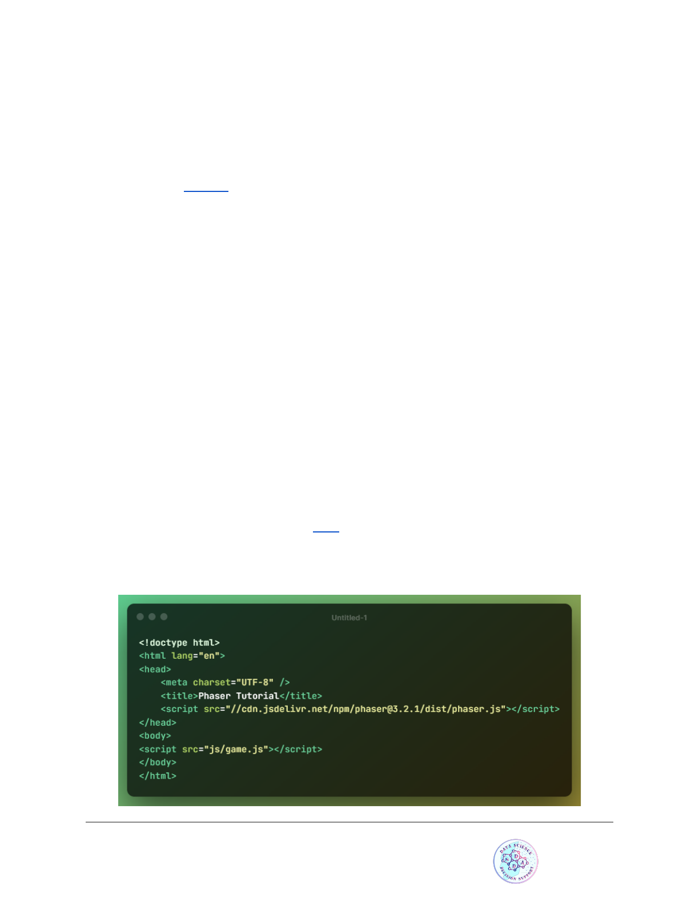
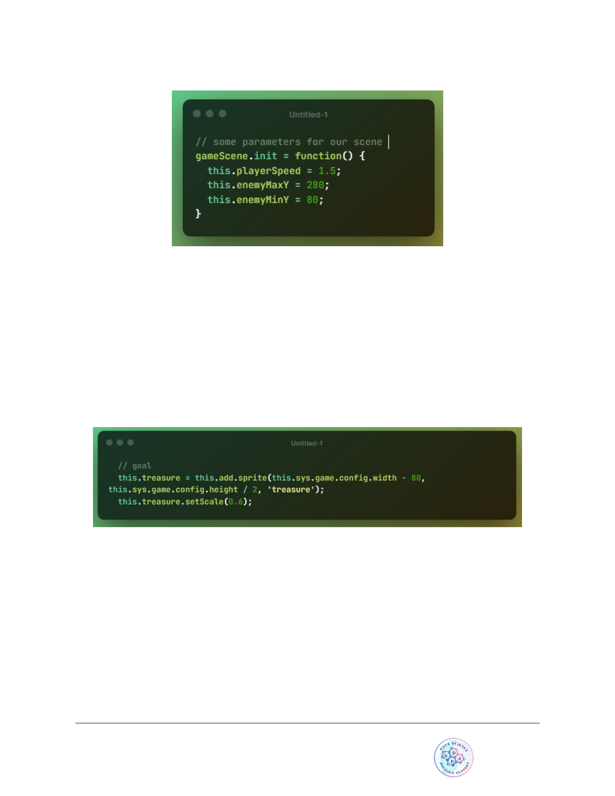
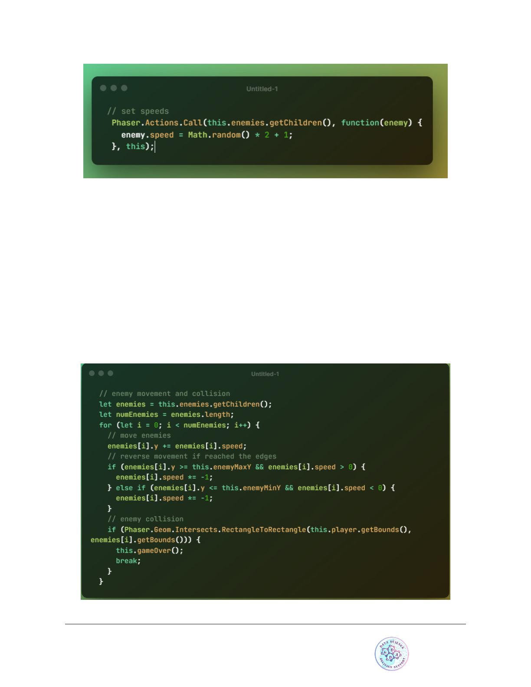

Phaser 3 Tutorial
Made by AIT DAOUD EL HOUSSEIN

Introduction
Making amazing cross-platform games is now easier than it’s ever been thanks to
Phaser, an Open Source JavaScript game development library developed by Richard
Davey and his team at Photonstorm. Games developed with Phaser can be played on
any (modern) web browser, and can also be turned into native phone apps by using
tools such as Cordova.
Learn by making your first game
The goal of this tutorial is to teach you the basics of this fantastic framework by
developing a Frogger game you see below:
Learning goals :
● Learn to build simple games in Phaser 3
● Work with sprites and their transforms
● Main methods of a Phaser scene
● Utilize groups to aggregate sprite behavior
● Basic camera effects (new Phaser 3 feature)
Made by AIT DAOUD EL HOUSSEIN

Tutorial requirements :
● Basic to intermediate JavaScript skills
● Code editor
● Web browser
● Local web server
● Tutorial assets to follow along
● No prior game development experience is required to follow along
Before we start
Make sure that you setup a local web server and open your empty project in a code
editor.
Hello world Phaser
Now that our web server is up and running, let's make sure we’ve got Phaser running on
our end. You can find the Phaser library here. There are different manners of obtaining
and including Phaser in your projects, but to keep things simple we’ll be using the CDN
alternative. I’d recommend you use the non-minified file for development – that will
make your life easier when debugging your game. More advanced developers might
want to divert from these instructions and use a more sophisticated development
environment setup and workflow. Covering those is outside of the scope of this tutorial,
but you can find a great starting point here, which uses Webpack and Babel.
In our project folder, create a index.html file with the following contents:
Made by AIT DAOUD EL HOUSSEIN
Now create a folder named js, and inside of it, our game file game.js :
What we are doing here:
● We are creating a new scene. Think of scenes as compartments where the
game action takes place. A game can have multiple scenes, and in Phaser 3 a
game can even have multiple open scenes at the same time (check out this
example)
● It’s necessary to tell our game what the dimensions in pixels will be. Important
to mention this is the size of the viewable area. The game environment itself has
no set size .
● A Phaser game can utilize different rendering systems. Modern browsers have
support for WebGL, which in simple terms consists in “using your graphic card to
render page content for better performance”. The Canvas API is present in more
browsers. By setting the rendering option to “AUTO”, we are telling Phaser to use
WebGL if available, and if not, use Canvas.
● Lastly, we create our actual game object.
If you run this on the browser and open the console you should see a message
indicating that Phaser is up and running:
Made by AIT DAOUD EL HOUSSEIN
Scene life-cycle
In order for us to add the first images to our game, we’ll need to develop a basic
understanding of the Scene life-cycle :
● When a scene starts, the init method is called. This is where you can setup
parameters for your scene or game.
● What comes next is the preloading phaser (preload method). Phaser loads images
and assets into memory before launching the actual game. A great feature of this
framework is that if you load the same scene twice, the assets will be loaded from a
cache, so it will be faster.
● Upon completion of the preloading phase, the create method is executed. This
one-time execution gives you a good place to create the main entities for your game
(player, enemies, etc).
● While the scene is running (not paused), the update method is executed multiple
times per second (the game will aim for 60. On less-performing hardware like low-range
Android, it might be less). This is an important place for us to use as well.
There are more methods in the scene life-cycle (render, shutdown, destroy), but we won’t
be using them in this tutorial.
Using the sprites
Let’s dive right into it and show our first sprite, the game background, on the screen. The
assets for this tutorial can be downloaded here. Place the images in a folder named
“assets”. The following code goes after let gameScene = new Phaser.Scene(‘Game’);
Made by AIT DAOUD EL HOUSSEIN
● Our game background image “background.png” is loaded. We are giving this asset the
label “background”. This is an arbitrary value, you could call it anything you want.
● When all images are loaded, a sprite is created. The sprite is placed in x = 0, y = 0. The
asset used by this sprite is that with label “background”.
The results :
That is definitely not what we wanted, we wanted to look like this :
Made by AIT DAOUD EL HOUSSEIN
Before solving this issue let’s first go over how coordinates are set in Phaser.
Coordinates
The origin (0,0) in Phaser is the top left corner of the screen. The x axis is positive to the
right, and y axis is positive downwards:
Made by AIT DAOUD EL HOUSSEIN
Sprites by default have their origin point in the center, box on x and y. This is an
important difference with Phaser 2, where sprites had what was called an anchor point
on the top-left corner.
This means, when we positioned our background on (0,0), we actually told Phaser: place
the center of the sprite at (0,0). Hence, the result we obtained.
To place the top-left corner of our sprite on the top-left corner of the screen we can
change the origin of the sprite, to be it’s top-left corner:
If we test the code now it should give us what we wanted previously.
The player
Time to create a simple player we can control by either clicking or touching on the
game. Since we’ll be adding more sprites, let’s add these to preload so we don’t have to
modify it again later:
Made by AIT DAOUD EL HOUSSEIN
We’ll then add the player sprite and reduce its size by 50%, inside of create :
● We are placing our sprite at x = 40. For y, we are placing it in the middle of the game
viewport. this gives us access to our current scene object, this.sys.game gives us
access to the global game object. this.sys.game.config gives us the configuration we
defined when initiating our game.
● Notice we are saving our player to the current scene object (this.player). This will
allow us to access this variable from other methods in our scene.
● To scale down our player we using the setScale method, which applies in this case a
scale of 0.5 to both x and y (you could also access the scaleX and scaleY sprite
properties directly).
Made by AIT DAOUD EL HOUSSEIN
The results :
Detecting Input
Phaser 3 provides many ways to work with user input and events. In this particular
game we won’t be using events but will just check that the “active input” (be default, the
mouse left button or the touch) is on.
If the player is pressing/touching anywhere on the game, our Player will walk forward.
To check for input in this manner we’ll need to add an update method to our scene
object, which will normally be called 60 times per second (it is based on the
requestAnimationFrame method, in less performing devices it will be called less often
so don’t assume 60 in your game logic):
Made by AIT DAOUD EL HOUSSEIN
● this.input gives us access to the input object for the scene. Different scenes have their
own input object and can have different input settings.
● This code will be true whenever the user presses the left button (clicks on the game
area) or touches the screen.
Moving the player
When the input is active we’ll increase the X position of the player:
this.playerSpeed is a parameter we haven’t declared yet. The place to do it will be the
init method, which is called before the preload method.
Add the following before the preload definition (the actual declaration order doesn’t
matter, but it will make our code more clear). We are adding other parameters as well
which we’ll use later:
Made by AIT DAOUD EL HOUSSEIN

Now we can control our player and move it all the way to the end of the visible area!
Treasure
What good is a game without a clear goal. Let’s add a treasure chest at the end of the
level. When the player position overlaps with that of the treasure, we’ll restart the scene.
Since we already preloaded all assets, jump straight to the sprite creation part. Notice
how we position the chest in X: 80 pixels to the left of the edge of the screen:
In this tutorial we are not using a physics system such as Arcade (which comes with
Phaser). Instead, we are checking collisions by using a utility method that comes in
Phaser, which allows us to determine whether two rectangles are overlapping.
We’ll place this check in update, as it’s something we want to be testing for at all times:
Made by AIT DAOUD EL HOUSSEIN
● The getBounds method of a sprite gives us the rectangle coordinates in the right
format.
● Phaser.Geom.Intersects.RectangleToRectangle will return true if both rectangles
passed overlap
Let’s declare our gameOver method (this is our own method, you can call it however you
want – it’s not part of the API!). What we do in this method is restart the scene, so you
can play again:
Enemies
What we’ll do next is create a group of moving dragons. Our enemies will have a back
and forth movement
In Phaser, a group is an object that allows you to create and work with multiple sprites
at the same time. Let’s start by creating our enemies in create:
Made by AIT DAOUD EL HOUSSEIN
● We are creating 5 (repeat property), sprites using the asset with label dragon.
● The first one is placed at (110, 100).
● From that first point, we move 80 on x (stepX) and 20 on Y (stepY), for every additional
sprite.
● For future reference, the members of a group are called “children”.
Made by AIT DAOUD EL HOUSSEIN
The dragons are too big. Let’s scale them down:
● Phaser.Actions.ScaleXY is a utility that reduces the scale by 0.5, to all the sprites that
are passed in.
● getChildren gets us an array with all the sprites that belong to a group
This is looking better :
Moving enemies
The up and down movement of the dragons will follow the logic described below. When
making games and implementing mechanics, it is in my opinion always good to outline
them and understand them well before attempting implementation:
Made by AIT DAOUD EL HOUSSEIN
● Enemies have a speed, a maximum and a minimum vale of Y they will reach (we
already have all of this declared in init).
● We want to increase the position of an enemy until it reaches the maximum value
● Then, we want to reverse the movement, until the minimum value is reached
● When the minimum value is reached, go back up.
Since we have basically an array of enemies, we’ll iterate through this array, in update,
and apply this movement logic to each enemy (note: speed hasn’t been declared yet, so
assume each enemy has a value setup for this property):
This code will make the dragons move up and down, provided speed was set. Let’s take
care of that now. In create, after scaling our dragons, let’s give each a random velocity
between 1 and 2:
Made by AIT DAOUD EL HOUSSEIN

● Phaser.Actions.Call allows us to call a method on each array element. We are passing
this as the context (although not using it). Now our up and down movement is
complete!
Colliding with enemies
We’ll implement this using the same approach we took for the treasure chest. The
collision check will be performed for each enemy. It makes sense to utilize the same for
loop we’ve already created:
Made by AIT DAOUD EL HOUSSEIN
Camera effects
A really cool feature of Phaser 3 is that of camera effects. Our game is playable but it
will be nicer if we can add some sort of camera shake effect. Let’s replace gameOver
by:
● The camera will be shaken for 500 milliseconds
● After 500 ms we are restarting the scene by using this.time.delayCall, which allows
you to execute a method after some time
There is a problem with this implementation, can you guess what it is?
After colliding with an enemy, the gameOver method will be called many times during
the 500 ms. We need some sort of switch so that when you run into a dragon, the
gameplay freezes. Add the following at the end of create:
Made by AIT DAOUD EL HOUSSEIN
The code below goes at the very start of update, so that we only process it if the player
is alive:
Our gameOver method:
Made by AIT DAOUD EL HOUSSEIN
Now the method won’t be activated many times in a row.
Fadeout effect
Before saying goodbye we’ll add a fadeout effect, which will commence half-way
through the camera shakeup:
● At time 250 ms we are starting our fade out effect, which will last for 250 ms.
Made by AIT DAOUD EL HOUSSEIN
● This effect will leave the game black, even after restarting our scene, so we do need to
call this.cameras.main.resetFX(); to go back to normal for that, add this to the bottom of
the create method, or the screen will remain black after you restart the scene:
You can now run the game and enjoy !
Made by AIT DAOUD EL HOUSSEIN